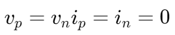
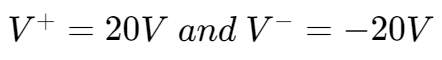
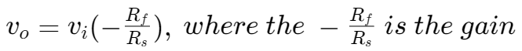
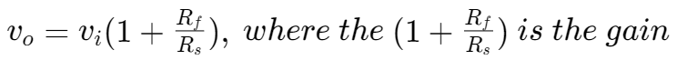
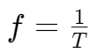
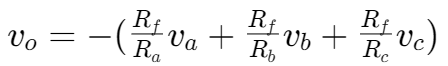
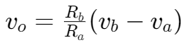

运算放大器 | Operational Amplifier
理想情况下的运算放大器 | Ideal OpAmp Rules
对于运算放大器，在线性区域内（输入电压未超过放大器电源电压），

放大器的截断 | OpAmp in Saturation
假设放大器的电源电压：，则放大器的输出随输入变化如图所示：

反相放大器 | The Inverting Amplifier


正相放大器 | The non-inverting Amplifier


波形性质 | Waveform Properties
- 周期 Period
T - 频率 Frequency
f,  - 峰到峰振幅 Peak-to-peak amplitude Vpp: ranges from the minimum to the maximum value.
求和放大器 | Summing amplifier


求差放大器 | Summing amplifier

